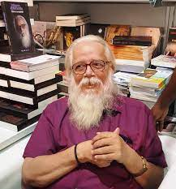

Nambi Narayanan.
12 December 1941(Age 81)
Aerospace Engineer
Nambi Narayanan(born 12 December 1941) is an Indian aerospace scientist who worked for the Indian Space Research Organisation (ISRO) and contributed significantly to the Indian space program by developing the Vikas rocket engine. He led the team which acquired technology from the French for the Vikas engine used in the first Polar Satellite Launch Vehicle (PSLV) that India launched. As a senior official at the ISRO, he was in charge of the cryogenics division. If he was not wrongly arrested then Indian space program would be much ahead than present as he is the founder of cryogenics technology which propels the recent Chandrayaan missions. He was awarded the Padma Bhushan, India's third-highest civilian award, in March 2019.
Books
- In December 2012, he acted as a professor in a documentary, Mizhineerkayal, about the Alleppey-Kuttanad backwaters.
- Ready To Fire: How India and I Survived the ISRO Spy Case by Nambi Narayanan, Arun Ram; Bloomsbury India, 2018.
Filmography
- In December 2012, he acted as a professor in a documentary, Mizhineerkayal, about the Alleppey-Kuttanad backwaters.
- In July 2022, a biographical film was made titled Rocketry: The Nambi Effect, written, directed by R. Madhavan, who also played the titular role of Narayanan.